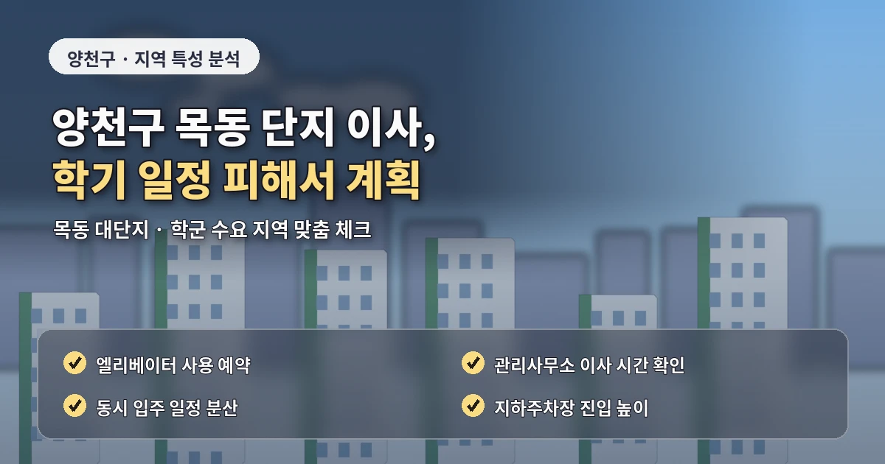
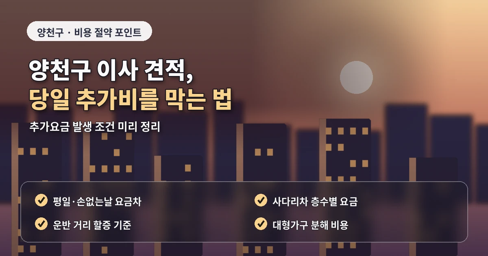

서울 양천구포장이사추천 목동아파트 비용 기준
양천구 포장이사는
목동 아파트 단지와 가족 단위 이사,
신정동과 신월동의 다양한 주거 형태를
함께 고려해야 합니다.
목동은 대단지 아파트와 학군 지역 수요가 많고,
신정동은 아파트와 빌라가 섞여 있으며,
신월동은 주택가와 골목형 주거지가 함께 있습니다.

양천구 포장이사 비용은
평수뿐 아니라
짐의 양,
엘리베이터 예약,
주차 가능 위치,
사다리차 사용 여부,
가족 짐의 종류에 따라 달라질 수 있습니다.
견적을 좌우하는 현장 조건
목동 아파트 이사는
관리사무소 이사 예약이 중요합니다.
동시 이사 세대가 많거나
엘리베이터 사용 시간이 제한되면
원하는 시간에 작업을 진행하기 어려울 수 있습니다.
날짜가 확정되면
업체 상담과 함께
관리사무소 예약 가능 시간을 먼저 확인하는 것이 좋습니다.
가족 단위 이사는
짐의 종류가 다양합니다.

의류, 책, 주방용품,
아이 물건, 대형가전,
가구가 함께 나오기 때문에
박스 수가 예상보다 많아질 수 있습니다.
업체 선택 전 확인할 기준
방별로 짐을 나누어 정리하면
업체가 작업 순서를 잡기 쉽고
도착지 정리도 빨라집니다.
양천구 포장이사 업체추천을 볼 때는
대단지 이사 경험과 가족 이사 경험을 함께 확인해야 합니다.
작업 인원이 부족하면
정해진 시간 안에 마무리하기 어렵고
물건 보호도 소홀해질 수 있습니다.
견적서에는 차량 대수,
작업 인원,
포장재,
옷장 박스,
주방 정리,
보양 범위,
보상 기준이 들어가야 합니다.
신월동이나 신정동 일부 지역은
골목과 주차 조건도 중요합니다.
화물차가 집 앞까지 들어가지 못하면
운반 거리가 늘어나고
장거리 운반비가 발생할 수 있습니다.
추가비용을 줄이는 준비 방법
빌라나 다세대주택은
계단 폭과 현관 구조를 확인해야 합니다.
포장이사 비교견적은
최소 3곳 이상 받는 것이 좋습니다.
다만 모든 업체에
같은 조건을 알려야 합니다.
층수, 엘리베이터, 주차,
사다리차 가능 여부,
짐의 종류,
분해가 필요한 가구,
버릴 물건 목록을 동일하게 전달해야
정확한 비교가 가능합니다.
추가비용을 줄이려면
이사 전에 불필요한 짐을 정리해야 합니다.
책, 의류, 오래된 가구,
사용하지 않는 생활용품을 줄이면
박스 수와 작업 시간이 줄어들 수 있습니다.
계약 전에 확인할 세부 항목
특히 가족 이사는 작은 물건이 많아
정리 여부가 비용과 작업 시간에 영향을 줄 수 있습니다.
계약 전에는
추가비 발생 조건과 일정 변경 기준도 확인해야 합니다.
목동처럼 예약이 중요한 지역은
시간 변경이 쉽지 않을 수 있으므로
업체와 관리사무소의 시간을 함께 맞춰두는 것이 안전합니다.
양천구 포장이사는
대단지 아파트와 골목형 주거지를
각각 다른 기준으로 봐야 합니다.
비용, 견적, 업체추천을 비교할 때도
주거 형태에 맞는 작업 조건을 확인하면
더 현실적인 선택이 가능합니다.
양천구 포장이사에서
도착지 배치 계획을 세우는 것도 중요합니다.
가족 이사는 방별 짐이 많기 때문에
박스를 아무 곳에나 두면
이사 후 정리 시간이 오래 걸릴 수 있습니다.
아이방, 안방, 주방, 거실에 들어갈 짐을
미리 구분해두면 작업자가 박스를 더 정확히 배치할 수 있습니다.
또한 목동처럼 단지 규모가 큰 곳은
차량에서 세대까지 이동 거리가 길 수 있습니다.
동 입구와 엘리베이터 위치,
주차 가능 구역을 미리 확인하면
작업 시간 예측이 훨씬 정확해집니다.
양천구 포장이사에서는 가족 구성원별 짐을 나누어 설명하면
견적의 정확도를 높일 수 있습니다.
아이방 책과 장난감, 주방용품, 의류, 베란다 짐은
박스 수를 빠르게 늘리는 항목입니다.
업체가 짐의 성격을 미리 알면 포장 순서와 작업 인원을 더 현실적으로 배치할 수 있습니다.
목동 아파트 단지처럼 규모가 큰 곳은
동 입구와 엘리베이터 사이의 거리도 확인해야 합니다.
차량에서 세대까지 이동 거리가 길면
실제 작업 시간이 늘어날 수 있습니다.
주차 가능 구역, 화물 엘리베이터 위치,
공용공간 보양 기준을 미리 확인하면 추가비용 가능성을 줄일 수 있습니다.
양천구 포장이사는 단지형 아파트와 골목형 주거지의 기준이 다릅니다.
목동은 엘리베이터 예약이 중요하고,
신월동 일부 지역은 주차와 계단 이동 여부가 견적에 더 큰 영향을 줄 수 있습니다.
주거 형태별 기준을 나누어 보면 업체 선택이 훨씬 쉬워집니다.
사전 정리는 비용 비교의 출발점입니다.
자주 묻는 질문
A. 관리사무소 예약, 엘리베이터 사용 시간, 차량 대기 위치를 먼저 확인해야 합니다.
A. 짐의 종류와 박스 수가 많으면 작업 인원과 시간이 늘어날 수 있습니다.
A. 골목 폭, 주차 가능 위치, 계단과 현관 구조를 확인하는 것이 좋습니다.